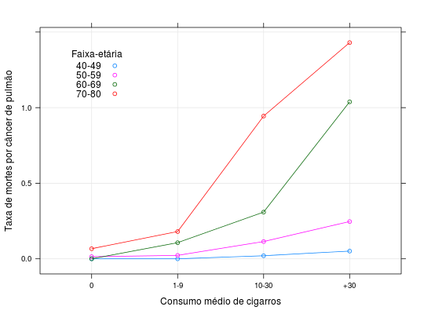

Dados provenientes de um estudo de acompanhamento de doutores Britânicos durante a década de 50. Neste estudo observou-se a ocorrência de mortes por câncer de pulmão segundo o consumo médio diário de cigarro e a faixa-etária.
Um data.frame com 16 observações e 4 variáveis.
nmortestpessoascmdcidadePAULA (2004), Tabela 4.2, pág. 294.
data(PaulaTb4.2)#> Warning: data set ‘PaulaTb4.2’ not foundstr(PaulaTb4.2)#> 'data.frame': 16 obs. of 4 variables: #> $ nmortes : int 0 3 0 3 0 1 3 3 7 29 ... #> $ tpessoas: num 33679 21132 10599 4496 6002 ... #> $ cmdc : Factor w/ 4 levels "0","1-9","10-30",..: 1 1 1 1 2 2 2 2 3 3 ... #> $ idade : Factor w/ 4 levels "40-49","50-59",..: 1 2 3 4 1 2 3 4 1 2 ...xtabs(nmortes ~ cmdc + idade, data = PaulaTb4.2)#> idade #> cmdc 40-49 50-59 60-69 70-80 #> 0 0 3 0 3 #> 1-9 0 1 3 3 #> 10-30 7 29 41 45 #> +30 3 16 36 11(xt <- xtabs((nmortes/tpessoas)*100 ~ cmdc + idade, data = PaulaTb4.2))#> idade #> cmdc 40-49 50-59 60-69 70-80 #> 0 0.00000000 0.01419682 0.00000000 0.06673340 #> 1-9 0.00000000 0.02274795 0.10662875 0.18023430 #> 10-30 0.02034026 0.11404302 0.30894431 0.94428706 #> +30 0.05101173 0.24640025 1.03851147 1.43042913plot(xt)library(lattice) xyplot((nmortes/tpessoas) * 100 ~ cmdc, xlab = "Consumo médio de cigarros", ylab = "Taxa de mortes por câncer de pulmão", groups = idade, data = PaulaTb4.2, type = c("b", "g"), auto.key = list(corner = c(0.1, 0.9), cex.title = 1, title = "Faixa-etária"))